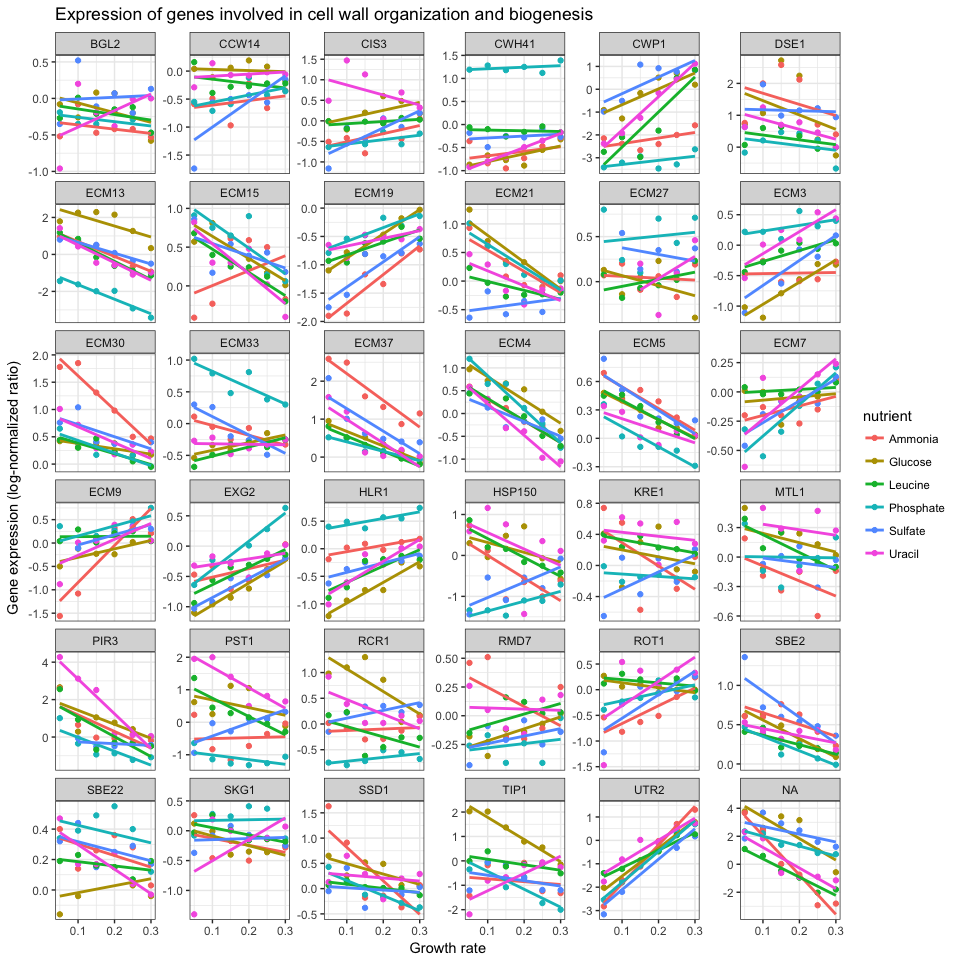

Reproducible Reporting Homework
INSTRUCTIONS: Following the horizontal lines below, beginning with the Introduction heading, is a report that is produced from an RMarkdown document. Write an RMarkdown document and “Knit HTML” to produce a report similar to what you see below.
- Start by clicking on the menus: File, New File, R Markdown….
- Choose HTML document, and give your document a title and an author’s name.
- Using the appropriate Markdown syntax and embedding RMarkdown chunks, reproduce the report below. (Feel free to copy and paste text as needed).
- Ensure that the hyperlink to the paper in the Introduction section works properly.
- Ensure that the bold, italicized, and
fixed widthtext come through in your document. Fixed width text is produced by enclosing text in backtick characters (the key above the tab key, to the left of the number 1 key on most keyboards).
- Ensure that this report is fully reproducible. You can assume that any computer this runs on will have the appropriate libraries installed (dplyr, readr, ggplot2). Notice that in the Load and examine biological processes subheading under the Data analysis heading uses
read_csv()to read data directly from the web, rather than from a local file. Thus, for this code to work, you must have internet access.
THE REPORT THAT YOU SHOULD PRODUCE FOLLOWS BELOW.
Introduction
This data is a tidy version of a gene expression dataset from Brauer et al. Coordination of Growth Rate, Cell Cycle, Stress Response, and Metabolic Activity in Yeast (2008) Mol Biol Cell 19:352-367. This data is from a gene expression microarray, and in this paper the authors are examining the relationship between growth rate and gene expression in yeast cultures limited by one of six different nutrients (glucose, leucine, ammonium, sulfate, phosphate, uracil). If you give yeast a rich media loaded with nutrients except restrict the supply of a single nutrient, you can control the growth rate to any rate you choose. By starving yeast of specific nutrients you can find genes that:
- Raise or lower their expression in response to growth rate. Growth-rate dependent expression patterns can tell us a lot about cell cycle control, and how the cell responds to stress. The authors found that expression of >25% of all yeast genes is linearly correlated with growth rate, independent of the limiting nutrient. They also found that the subset of negatively growth-correlated genes is enriched for peroxisomal functions, and positively correlated genes mainly encode ribosomal functions.
- Respond differently when different nutrients are being limited. If you see particular genes that respond very differently when a nutrient is sharply restricted, these genes might be involved in the transport or metabolism of that specific nutrient.
Data analysis
Below we will load the dataset and proceed with a very basic analysis.
Load and examine biological processes
After loading the dplyr and readr libraries, use readr’s read_csv() function to read the data directly from the web, assigning it to an object in our workspace called ydat.
library(dplyr)
library(readr)
ydat <- read_csv("http://bioconnector.org/data/brauer2007_tidy.csv")Which biological processes have the most genes? That is,
- Take the ydat data,
- then group it by biological process,
- then summarize it to count the number of distinct genes within each process,
- then arrange it descending by the largest number of genes,
- then show only the top 20 results.
ydat %>%
group_by(bp) %>%
summarize(n=n_distinct(symbol)) %>%
arrange(desc(n)) %>%
head(20)## Source: local data frame [20 x 2]
##
## bp n
## (chr) (int)
## 1 biological process unknown 269
## 2 protein biosynthesis 182
## 3 protein amino acid phosphorylation* 78
## 4 protein biosynthesis* 73
## 5 cell wall organization and biogenesis* 64
## 6 regulation of transcription from RNA polymerase II promoter* 49
## 7 nuclear mRNA splicing, via spliceosome 47
## 8 DNA repair* 44
## 9 aerobic respiration* 42
## 10 ER to Golgi transport* 42
## 11 endocytosis* 41
## 12 mRNA-nucleus export* 41
## 13 response to stress* 39
## 14 protein-vacuolar targeting* 37
## 15 cell wall organization and biogenesis 36
## 16 rRNA processing* 35
## 17 ubiquitin-dependent protein catabolism 35
## 18 ER to Golgi transport 33
## 19 35S primary transcript processing* 30
## 20 chromatin silencing at telomere* 29Visualize genes in a particular biological process
Create a new object that contains the data filtered down to the 36 genes involved in cell wall organization and biogenesis. Plot a scatter plot of the expression versus rate, color-coding by the limiting nutrient, showing a different gene in each panel, where the y-axis scale in each panel can vary from panel to panel.
# First load the ggplot2 library
library(ggplot2)
cwob <- ydat %>% filter(bp=="cell wall organization and biogenesis")
ggplot(cwob, aes(rate, expression, color = nutrient)) +
geom_point() +
geom_smooth(method = "lm", se = FALSE) +
facet_wrap(~symbol, scales="free_y") +
theme_bw() +
xlab("Growth rate") +
ylab("Gene expression (log-normalized ratio)") +
ggtitle("Expression of genes involved in cell wall organization and biogenesis")
THE REPORT YOU SHOULD PRODUCE ENDS HERE